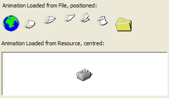

Animation Control Class Code (27K)
Animation Control Class Code (27K)
 Bugs: 0 / 0
Bugs: 0 / 0
 Issues: 0 / 0
Issues: 0 / 0
 Questions: 0 / 1
Questions: 0 / 1
 11 Feb 2003
11 Feb 2003
First Posted
 Subclassing Without The Crashes
Subclassing Without The Crashes

ComCtl32.DLL Animation Control Class
A simple to use class for adding animations to your project
This article presents a simple class you can use to load AVIs from files or an application's resource file for display whilst the application is performing a long operation.
The ComCtl32.DLL Animation Control
The animation control provided with ComCtl32.DLL is a simple way of displaying AVI files asynchronously. You can see this control in use whenever you delete or copy large numbers of files from Windows Explorer: a small popup window shows and displays a copy or delete AVI along with a progress bar. The control itself is nice and simple: once created, you tell it to load an AVI and then it can either automatically start playing the AVI or you can start and stop the AVI manually and control exactly which frames are displayed. The AVI is played from a separate thread which means it continues to update even if your application is busy (note that this is only true when VB is running outside the IDE).
The control itself isn't actually much of a control: it's transparent to the mouse and only has two events, which you very rarely ever want to use: notification of the animation starting and stopping. So the approach taken here is to implement it as a class instead, and allow you to specify which object (form or control) you'd like the animation to be drawn on.
The cAnimControl Class
The class itself turns out to be 12k in size, which is rather smaller than using the MS controls for the same purpose (the VB5 one is 161k, with VB6 coming in at a fairly hefty 633k...). The class is a little tricker than a control because you can't set any properties outside code, but not very much as it only has a handful of properties and methods:
- Owner
Gets/sets the object the animation control will be drawn onto. As soon as this is specified the control will be created, and any animations specified will be loaded. - Transparent
Gets/sets whether the AVI will be displayed transparently. Transparent in terms of the Animation Control means setting the background of the AVI to the background colour of the object it is placed on. When the AVI is loaded for the first time, the control evaluates the top-left pixel of the first frame of the AVI. This colour is then replaced with the background colour of the background whether an AVI frame is drawn. - AutoPlay
Gets/sets whether the AVI will start continuously playing as soon as it has been loaded. - Centre
Gets/sets whether the AVI is centred to the Owner control when it is loaded. Otherwise, the AVI is shown at the top left point in the control, and you can determine the Width and Height of the AVI (in pixels) using the Width and Height properties. - FileName
Specifies the name of an AVI file to load. Specifying this unloads any AVI currently open. If the filename is blank, then the control is hidden. - ResourceId, ResourceFileName
See the next section for details on loading AVIs from resources.
Loading Animations from Resource Files
Animations can be loaded from any EXE or DLL provided that they are created with the resource type "AVI". Here is a sample Resource File script (.rc file) for creating a compiled resource file containing an AVI at resource id 101:
// AVI 101 AVI "printing.avi"
To open the animation from the resource, you first specify the ResourceFileName if the resource is not in the current application's executable and then specify the animation resource id to load using the ResourceId. The class will attempt to load the resource as soon as ResourceId has been set. Note that if you're loading the resource from the local application (i.e. ResourceFileName is blank) then loading will only succeed when the application is compiled.
If You Really Do Want To Respond to Start, Stop Notifications
Although the class doesn't support Start and Stop notifications, its easy to add code to your project for them if you need to. Just reference the Subclassing and Timer Assistant and then add code like this:
Option Explicit
Private Const WM_COMMAND = &H111&
Private Const ACN_START = 1
Private Const ACN_STOP = 2
Private m_cAnim As cAnimControl
Implements ISubClass
Private Sub Form_Load()
' Attach to the window handle of the Owner
' of the cAnimControl class:
AttachMessage Me, picAnim.hWnd, WM_COMMAND
' Create the animation control, and play once:
Set m_cAnim = New cAnimControl
m_cAnim.Filename = App.Path & "\download.avi"
m_cAnim.Owner = picAnim
m_cAnim.StartPlay , , 1
End Sub
Private Property Let ISubClass_MsgResponse(ByVal RHS As EMsgResponse)
'
End Property
Private Property Get ISubClass_MsgResponse() As EMsgResponse
ISubClass_MsgResponse = emrPostProcess
End Property
Private Function ISubClass_WindowProc( _
ByVal hWnd As Long, _
ByVal iMsg As Long, _
ByVal wParam As Long, _
ByVal lParam As Long) As Long
If (iMsg = WM_COMMAND) Then
If (lParam = m_cAnim.hWnd) Then
Dim iCode As Long
iCode = (wParam And &H7FFF0000) \ &H10000
Select Case iCode
Case ACN_START
Debug.Print "Started..."
Case ACN_STOP
Debug.Print "Stopped."
End Select
End If
End If
End Function